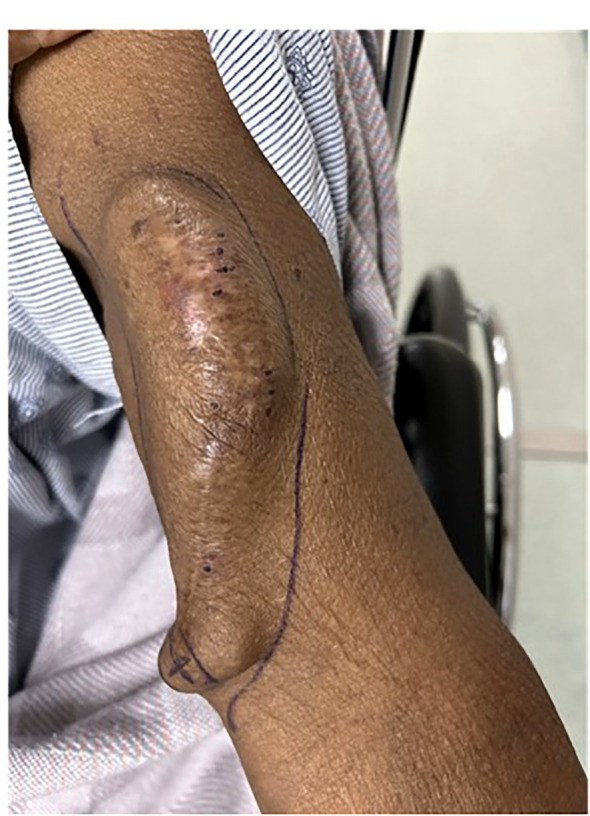
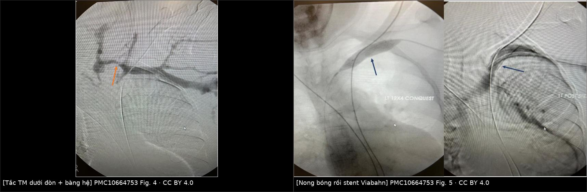
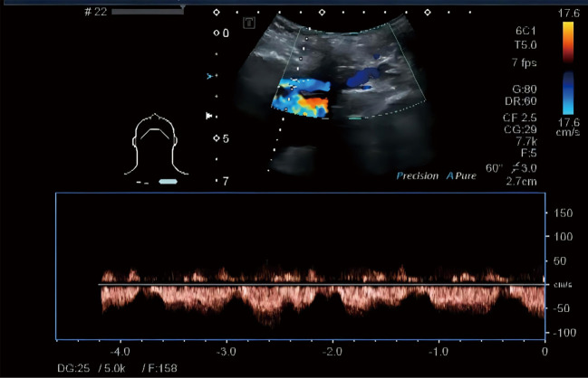

095 — Hẹp/tắc tĩnh mạch trung tâm ở bệnh nhân lọc máu chu kỳ: chẩn đoán, chỉ định can thiệp và giữ đường mạch máu / Central vein stenosis in hemodialysis
Tags: pattern:hep-tinh-mach pattern:tuan-hoan-bang-he vung:trung-that vung:chi-tren protocol:sieutham-Doppler protocol:CTV-nguc protocol:DSA-tinh-mach protocol:stent-tinh-mach
Mức chắc chắn (certainty): tổng hợp y văn (literature synthesis) — bài tổng quan của Echefu G et al., Front Nephrol 2023 (PMC10664753), nghiên cứu Doppler tĩnh mạch nách của Xu X et al., Ann Transl Med 2022 (PMC8848436), nghiên cứu dấu hiệu đường ngực bên trên CT liều thấp của Li G et al., Front Med 2026 (PMC13327934) và bài tổng quan hình ảnh AVF/AVG của Gonzalez TV et al., Cardiovasc Diagn Ther 2023 (PMC9971293). Số chưa kiểm chứng ghi "chưa rõ", không bịa.
1. Tổng quan bệnh học – cơ chế hình ảnh
- Định nghĩa thực hành: hẹp/tắc tĩnh mạch trung tâm (central vein stenosis, CVS) là hẹp tĩnh mạch dưới đòn, tĩnh mạch cánh tay đầu (brachiocephalic/innominate) hoặc tĩnh mạch chủ trên (SVC) — đoạn từ bờ trong xương sườn 1 đến cơ hoành. Đây là "đoạn đường ra" (outflow) của cả đường mạch máu lọc máu; hẹp ở đây làm toàn bộ cung mạch máu (access circuit) tắc nghẽn, dù miệng nối AVF hoàn toàn bình thường.
- TẠI SAO tĩnh mạch trung tâm bị hẹp chứ không phải tĩnh mạch ngoại vi: thành tĩnh mạch trung tâm ít van, lưu lượng cao, áp lực thấp; khi có dòng xoáy và lực cắt (shear stress) từ catheter hoặc từ lưu lượng AVF lớn, nội mạc bị tổn thương → tăng sinh nội mạc (intimal hyperplasia) + tái cấu trúc thành mạch, không phải huyết khối đơn thuần. Vì vậy tổn thương là xơ co rút, đàn hồi ngược (elastic recoil), đáp ứng kém với nong bóng đơn thuần và tái hẹp đúng chỗ cũ (Echefu G et al. 2023).
- TẠI SAO tĩnh mạch dưới đòn là "ổ" hay gặp nhất: đoạn dưới đòn đi qua khe sườn–đòn (costoclavicular space) hẹp, bị chèn ép lặp lại khi vận động tay → chấn thương nội mạc mạn + huyết khối trong lòng; cộng thêm catheter tì vào thành mạch. Đây là lý do KDOQI khuyến cáo tránh đặt catheter dưới đòn, ưu tiên tĩnh mạch cảnh trong phải vì đường đi thẳng vào SVC.
- Số liệu "vì sao phải nhớ" (Echefu G et al. 2023):
| Bối cảnh | Tần suất CVS | Nguồn/nhóm |
|---|---|---|
| Chụp tĩnh mạch vì biến chứng của đường mạch máu | 41% có hẹp đáng kể | nhóm chụp vì triệu chứng |
| Lập bản đồ tĩnh mạch trước tạo AVF (CKD 4–5 + ESRD) | 10% chung; 13% nếu có catheter có cuff; 2% ở nhóm chưa lọc máu | Tedla 2018 |
| Đoàn hệ 2.811 bệnh nhân lọc máu | 4,3% (120 ca), thời gian lọc trung vị 2,9 năm | loạt hồi cứu |
| Số lần đặt catheter trung tâm trong đời | 3,4% (0–1 lần) · 29,4% (2–3 lần) · 53,8% (≥ 4 lần) | 106 bệnh nhân |
| Có catheter dưới đòn trước đó | 47,8% vs 22,0% (p = 0,02) | 106 bệnh nhân |
| Catheter lọc máu ngắn hạn, thời gian lưu trung bình 21 ngày | 14% (8 ca) đã có CVS | nghiên cứu tiến cứu |
| PICC | 4,8% hẹp + 2,7% tắc tĩnh mạch trung tâm | 150 ca chụp trước–sau |
| CVS de novo không do catheter, lưu lượng AVF cao | 10% (6/57); lưu lượng đo được 2.347 mL/phút | nghiên cứu de novo |
- TẠI SAO hẹp mà vẫn lọc được — và tại sao đó là bẫy: khi hẹp tiến triển chậm, tuần hoàn bàng hệ (collateral veins) phát triển qua tĩnh mạch giáp, ngực trong, liên sườn, hệ azygos. Bàng hệ đủ lớn thì áp lực tĩnh mạch sau hẹp không tăng, bệnh nhân không phù tay, nhưng lưu lượng lọc giảm, tái tuần hoàn (recirculation) tăng, chảy máu sau lọc kéo dài và thời gian cầm máu tại chỗ chọc tăng — những dấu hiệu bị bỏ qua nhất. Trong nhóm có AVF/AVG còn hoạt động, tới 29% CVS hoàn toàn không triệu chứng.
- Vì sao AVG dễ có triệu chứng hơn AVF: graft có lưu lượng cao hơn và không có mạng tĩnh mạch nông dự trữ như fistula; cùng mức hẹp, graft dồn áp lực vào ít đường thoát hơn → phù tay rõ hơn.
2. Mẫu hình + chẩn đoán phân biệt theo vị trí (gamut)
Câu hỏi thực hành: bệnh nhân lọc máu có phù tay cùng bên AVF + giãn tĩnh mạch nông + AVF kém hiệu quả — hẹp ở đâu, do đâu, và có đáng can thiệp không?
- Theo vị trí (location gamut):
- Tĩnh mạch dưới đòn (subclavian): hay gặp nhất sau catheter dưới đòn; hẹp dài, dính thành; sờ thấy dây tĩnh mạch nổi trên vai/ngực.
- Tĩnh mạch cánh tay đầu (brachiocephalic): sau catheter cảnh trong, sau máy tạo nhịp/ICD; hẹp ngay chỗ dây điện bắt chéo.
- SVC: hẹp/tắc thường do catheter có cuff lâu năm hoặc dây tạo nhịp; hai bên → hội chứng SVC (phù mặt, tuần hoàn bàng hệ thành ngực).
- Eo tĩnh mạch đầu (cephalic arch): không phải "trung tâm" nhưng là chỗ hẹp kinh điển của AVF cánh tay–đầu; hẹp do xơ + van + chèn ép cân, tái hẹp rất cao.
- Theo cơ chế (mechanism gamut) — quan trọng hơn vị trí:
- Do catheter/thiết bị trong lòng mạch (CVC lọc máu, PICC, pacemaker/ICD, port): tổn thương cơ học + huyết khối + xơ hóa.
- De novo do lưu lượng cao (AVF/AVG lưu lượng lớn, đặc biệt AVF cánh tay): dòng xoáy → tăng sinh nội mạc, không cần catheter.
- Chèn ép từ ngoài: hội chứng lồng ngực thoát (thoracic outlet), xơ hóa trung thất (sau xạ, lao, histoplasmosis), bướu giáp sau xương ức, phình/bóc tách ĐMC.
- Xâm lấn/u trong lòng: ung thư phổi/lymphoma/hạch trung thất, huyết khối ác tính.
- Sau xạ trị / sau mổ vùng trung thất: xơ hóa, hẹp dài không vôi.
- Theo triệu chứng (dùng để quyết định can thiệp):
- Chỉ phù tay nhẹ, không ảnh hưởng lọc → theo dõi (xem mục 5).
- Phù tay nặng + đau + loét da + giãn bàng hệ → can thiệp.
- AVF kém: lưu lượng thấp, tái tuần hoàn cao, Kt/V giảm, huyết khối tái phát → can thiệp.
- Hội chứng SVC (phù mặt, khó thở khi nằm, tuần hoàn bàng hệ thành ngực) → xử trí cấp, ưu tiên tái thông.
Ảnh minh họa mẫu hình

Lâm sàng: tay có AVF cánh tay–đầu bị giãn, phồng, da căng và đổi màu do tăng áp lực tĩnh mạch — hậu quả trực tiếp của hẹp đường ra trung tâm. Nguồn: Echefu G et al., Front Nephrol 2023, PMC10664753 Fig. 3 — CC BY 4.0.3. Bảng so sánh phân biệt (ma trận đối chiếu)
| Thực thể (entity) | Hình ảnh điển hình (US/CT/DSA) | Chốt vào (rule-in) | Chốt loại (rule-out) | Gợi ý xác nhận |
|---|---|---|---|---|
| Hẹp do catheter cũ | Hẹp dài, nhẵn, dính thành, thường dưới đòn/cánh tay đầu; bàng hệ thành ngực | Tiền sử catheter cùng bên + hẹp > 50% + bàng hệ | Hẹp khu trú đúng miệng nối AVF → hẹp miệng nối, không phải trung tâm | CTV/MRV; DSA + đo gradient |
| De novo do lưu lượng cao | Hẹp dài ở chỗ nối tĩnh mạch, không catheter; AVF lưu lượng rất cao | Không tiền sử catheter + lưu lượng AVF cao + hẹp tiến triển | Có catheter/thiết bị cùng bên → quy về nhóm catheter | Đo lưu lượng AVF, siêu âm |
| Hẹp do dây tạo nhịp/ICD | Dây điện trong SVC/cánh tay đầu + hẹp sát dây; thường không triệu chứng | Thấy dây + hẹp + phù tay cùng bên | Không có thiết bị → loại | CTV ít kim loại, siêu âm |
| Hội chứng lồng ngực thoát | Hẹp dưới đòn khi giơ tay/động tác; hẹp động, hết khi tay nghỉ | Hẹp chỉ xuất hiện ở tư thế động tác | Hẹp cố định mọi tư thế → xơ/catheter | Siêu âm tư thế, chụp tĩnh mạch động |
| Xơ hóa trung thất sau xạ | Hẹp dài, đối xứng, không vôi; tiền sử xạ trung thất | Phân bố theo trường chiếu + hẹp dài | Hẹp khu trú + bàng hệ lớn → nguyên nhân trong lòng | CT ngực có tiền sử xạ |
| Hội chứng SVC do u | Khối trung thất + chèn ép/huyết khối SVC; phù mặt, tuần hoàn bàng hệ | Khối trung thất + hẹp/tắc SVC | Không khối, chỉ hẹp dây → nguyên nhân lành tính | CT có cản quang, sinh thiết |
| Hẹp miệng nối AVF | Hẹp ngay chỗ nối động–tĩnh mạch, cách trung tâm > 10 cm | Hẹp đúng miệng nối + lưu lượng thấp | Hẹp ở dưới đòn/cánh tay đầu → CVS | Siêu âm dọc AVF, fistulogram |

Trái: tắc tĩnh mạch dưới đòn, thuốc chỉ tới chỗ tắc, tuần hoàn bàng hệ (mũi tên cam). Phải: nong bóng áp lực cao rồi đặt stent phủ Viabahn để giữ đường ra. Nguồn: Echefu G et al., Front Nephrol 2023, PMC10664753 Fig. 4–5 — CC BY 4.0. Ảnh ghép letterbox của repo, không crop.Dấu hiệu định lượng cần đo
- Siêu âm Doppler (first-line): tỉ lệ vận tốc đỉnh (peak vein velocity ratio) > 2,5 qua chỗ hẹp tương ứng gradient 3 mmHg; hẹp > 50% đường kính được coi là có ý nghĩa. Hạn chế chết người: siêu âm trực tiếp chỉ thấy 27,78% (5/18) các hẹp trung tâm đã được DSA xác nhận, vì đoạn sau xương đòn không có cửa sổ (Xu X et al. 2022) — siêu âm bình thường KHÔNG loại trừ CVS.
- Mô hình CVSI từ phổ tĩnh mạch nách (Xu X et al. 2022, 37 ca): 9 tham số phổ (mất pha theo nhịp thở/tim) → CVSI cắt 7,13, AUC 0,965, độ nhạy 100%, độ đặc hiệu 84,2%. Đây là cách "nhìn thượng nguồn" thay vì cố thấy chỗ hẹp.
- CT liều thấp — dấu hiệu đường ngực bên (lateral thoracic pathway, LTP): tĩnh mạch giãn bất thường ở thành ngực trước–bên, độ nhạy 94,1%, độ đặc hiệu 61,7%, NPV 96,3%; giãn tĩnh mạch thành ngực thấy trên lâm sàng có độ đặc hiệu 97,7% nhưng độ nhạy chỉ 30,3% (Li G et al. 2026, 355 bệnh nhân). Nghĩa là: không thấy bàng hệ trên CT → gần như loại CVS; thấy bàng hệ → vẫn phải chụp xác định.
- MRV với ferumoxytol: độ nhạy 99%, độ đặc hiệu 98% — hữu ích khi cần tránh iod ở bệnh nhân còn chức năng thận (Echefu G et al. 2023).
- DSA + đo gradient: tiêu chuẩn vàng; can thiệp khi có hẹp > 50% + triệu chứng, không dựa vào hình ảnh đơn thuần.
4. Protocol chụp + phân độ + chỉ định can thiệp
Protocol
- Bước 1 — siêu âm Doppler màu có đo phổ: đầu dò linear, khảo sát tĩnh mạch từ cổ tay đến cổ; đo vận tốc đỉnh tại chỗ hẹp và trước hẹp (tỉ lệ > 2,5), ghi mất pha theo nhịp thở ở tĩnh mạch nách; đo lưu lượng AVF (mL/phút).
- Bước 2 — CT tĩnh mạch (CTV) hoặc MRV: CTV lát ≤ 1 mm, cản quang tĩnh mạch tay cùng bên, dựng MPR/MIP; đọc thêm dấu LTP ở thành ngực. Cân nhắc MRV nếu eGFR thấp.
- Bước 3 — DSA tĩnh mạch (fistulogram/venogram): bơm thuốc qua kim tại AVF hoặc catheter; chụp toàn bộ đường ra tới SVC/nhĩ phải, đo gradient áp lực qua chỗ hẹp, xác định có/không hẹp đàn hồi (recoil) sau nong.
- Bước 4 — can thiệp ngay trong cùng buổi: nong bóng áp lực cao (high-pressure balloon) trước; stent khi thất bại.
Phân độ và ngưỡng (theo Echefu G et al. 2023 + KDOQI 2019)
- Hẹp có ý nghĩa: > 50% đường kính + triệu chứng/tác động lên lọc máu. Hẹp không triệu chứng không can thiệp dự phòng: trong 88 tổn thương hẹp > 50% không triệu chứng, 64 được nong bóng tiến triển nhanh hơn và xuất hiện tổn thương mới, 24 ca không can thiệp không ca nào có triệu chứng hay cần can thiệp (Levit 2006).
- Nong bóng đơn thuần (PTA): thành công kỹ thuật 70–90%; thông sơ cấp 23–63% ở 6 tháng, 12–50% ở 12 tháng; thông tích lũy 29–100%. Tái hẹp do hồi phục đàn hồi + tăng sinh nội mạc.
- Stent: chỉ định khi tái phát trong 3 tháng, hồi phục đàn hồi, hoặc bóc tách gây hẹp dòng. Stent phủ (covered stent) > stent kim loại trần: loạt 70 bệnh nhân của Quaretti — thông sơ cấp 100/100/100/84% ở 3/6/12/24 tháng so với 90/79/58/43% của PTA (p = 0,014) và 84/80/75/46% của stent trần (p = 0,062).
- Stent phủ cho tổn thương kháng trị: 97/81/67/45% ở 3/6/12/24 tháng; thông có hỗ trợ 100/100/80/75% — nghĩa là vẫn phải nong lại định kỳ.
- Bóng phủ thuốc (DCB): thời gian không can thiệp lại 179 ngày vs 124,5 ngày (p = 0,026) trong một RCT nhỏ 40 ca — chưa thay đổi thực hành.
- Khi đầu cánh tay "hết đường": HeRO graft (thông sơ cấp 57% so với stent 28%; số lần can thiệp 1,4 vs 2,3/bệnh nhân–năm) hoặc banding giảm lưu lượng (chỉ hiệu quả khi lưu lượng ≥ 700–800 mL/phút) hoặc bypass ngoài giải phẫu nối vào nhĩ phải (thông sơ cấp 80–85% ở 1 năm nhưng hẹp/tắc 36%, nhiễm 18% — biện pháp cuối).
flowchart TD
A[BN lọc máu: phù tay + bàng hệ + AVF kém] --> B{Siêu âm: tỉ lệ vận tốc > 2,5 hoặc CVSI > 7,13?}
B -->|Không| C[Tìm nguyên nhân khác: steal, hẹp miệng nối, huyết khối, suy tim]
B -->|Có| D[CTV hoặc MRV: vị trí hẹp + dấu LTP + bàng hệ]
D --> E{Hẹp > 50% VÀ có triệu chứng hoặc lọc kém?}
E -->|Không| F[Theo dõi — KHÔNG can thiệp dự phòng]
E -->|Có| G[Nong bóng áp lực cao]
G --> H{Tái phát < 3 tháng hoặc hồi phục đàn hồi hoặc bóc tách?}
H -->|Không| I[Theo dõi lâm sàng + siêu âm mỗi 3 tháng]
H -->|Có| J[Stent phủ — ưu tiên hơn stent trần]
J --> K{Vẫn tắc hoặc tái phát nhiều lần?}
K -->|Có| L[HeRO / banding / bypass nhĩ phải]
K -->|Không| I
5. Biến thể bình thường và cạm bẫy
- Bàng hệ "đẹp" che mất hẹp: tĩnh mạch giáp, ngực trong, liên sườn giãn là dấu hiệu của hẹp trung tâm, không phải "tuần hoàn tốt". Đừng kết luận "không hẹp" chỉ vì tay không phù.
- Hẹp không triệu chứng: tổn thương > 50% nhưng bệnh nhân lọc tốt, không phù → không nong dự phòng (bằng chứng Levit 2006 ở trên).
- Hẹp động do tư thế (thoracic outlet): hẹp chỉ xuất hiện khi giơ tay/động tác — nếu nong bóng sẽ tái phát ngay; phải chẩn đoán bằng siêu âm/venogram tư thế.
- Nhầm với hẹp miệng nối AVF: hẹp miệng nối gây lưu lượng thấp và rung mạch yếu tại miệng nối; hẹp trung tâm gây phù tay + bàng hệ + áp lực tĩnh mạch cao khi lọc. Cả hai có thể cùng tồn tại.
- "Phù tay sau khi đặt AVF mới" không phải lúc nào cũng do hẹp: phù do tăng lưu lượng và suy bơm bạch huyết thường giảm trong 2–4 tuần; phù tiến triển + bàng hệ mới là hẹp.
- Dây tạo nhịp/ICD nằm trong SVC: hẹp quanh dây có thể không đáp ứng nong bóng và dễ tái phát; cân nhắc stent phủ hoặc đổi đường tạo nhịp (điện cực epicardial, máy không dây) thay vì nong lặp lại.
- Cạm bẫy thuốc cản quang: bệnh nhân lọc máu còn nước tiểu có nguy cơ bệnh thận do cản quang; ưu tiên CO₂ venography hoặc MRV ferumoxytol khi có thể.
- Đừng bỏ sót hội chứng SVC lành tính: hẹp SVC hai bên do catheter lâu năm gây phù mặt, giảm thị lực, đau đầu khi cúi — dễ bị gán cho "dị ứng" hoặc "phù do lọc".
6. Tự lượng giá — Blind Quiz
Ca 1 — Nam 58 tuổi, lọc máu 6 năm qua AVF cánh tay trái, trước đó đặt catheter dưới đòn trái 3 lần. Tay trái phù tăng dần 3 tháng, tĩnh mạch nổi rõ ở vai–ngực.
- Câu hỏi: Dấu hiệu nào trên ảnh gợi ý tăng áp lực tĩnh mạch hơn là huyết khối cấp? Chỗ hẹp khả năng nhất ở đâu? Cần chụp gì tiếp theo?
Bấm để hiện đáp án (findings + chẩn đoán)
- Dấu hiệu: AVF và tĩnh mạch nông giãn rất mạnh, da căng, tuần hoàn bàng hệ vùng vai–ngực; không có mảng tím/đau kiểu huyết khối cấp.
- Chẩn đoán: hẹp tĩnh mạch trung tâm (CVS) sau nhiều lần catheter dưới đòn cùng bên — vị trí hay gặp nhất là tĩnh mạch dưới đòn. Xác nhận bằng CTV/MRV rồi DSA + đo gradient để quyết định nong bóng.
- Vì sao: catheter dưới đòn gây chấn thương nội mạc lặp lại ở khe sườn–đòn → tăng sinh nội mạc → hẹp; bàng hệ phát triển nhưng không đủ cho lưu lượng AVF.
- Nguồn ảnh: Echefu G et al., Front Nephrol 2023, PMC10664753 Fig. 3 — CC BY 4.0.
Ca 2 — Bệnh nhân lọc máu, AVF cánh tay phải kém, phù tay. Chụp tĩnh mạch: thuốc dừng ở tĩnh mạch dưới đòn, nhiều tĩnh mạch bàng hệ.
- Câu hỏi: Mô tả hai bên của ảnh ghép. Vì sao chọn stent phủ thay vì chỉ nong bóng ở tổn thương này?
Bấm để hiện đáp án (findings + chẩn đoán)
- Findings: trái — tắc hoàn toàn tĩnh mạch dưới đòn, cột thuốc tận cùng, mạng bàng hệ (mũi tên cam); phải — nong bóng áp lực cao (12 × 4 cm) rồi đặt stent phủ Viabahn giữ đường ra.
- Chẩn đoán: tắc tĩnh mạch trung tâm do catheter cũ, chỉ định tái thông khi có triệu chứng + AVF kém.
- Vì sao stent phủ: tổn thương tắc/xơ dài, đàn hồi ngược mạnh; thông sơ cấp 100/100/100/84% ở 3/6/12/24 tháng so với 90/79/58/43% của PTA (Quaretti, p = 0,014). Stent trần không tốt hơn PTA.
- Nguồn ảnh: Echefu G et al., Front Nephrol 2023, PMC10664753 Fig. 4–5 — CC BY 4.0; composite do repo tạo, letterbox, không crop.
Ca 3 — Bệnh nhân lọc máu qua AVF quay–đầu, siêu âm tĩnh mạch nách thấy phổ mất pha theo nhịp thở; DSA xác nhận hẹp tĩnh mạch cánh tay đầu.

- Câu hỏi: Phổ Doppler này khác phổ bình thường ở điểm nào? Vì sao siêu âm trực tiếp chỗ hẹp lại hay âm tính?
Bấm để hiện đáp án (findings + chẩn đoán)
- Findings: phổ tĩnh mạch nách mất biến thiên theo nhịp thở và nhịp tim, dòng chảy liên tục, ít pha — dấu hiệu cản trở đường ra phía sau.
- Chẩn đoán: hẹp tĩnh mạch cánh tay đầu; mô hình CVSI (9 tham số phổ) đạt AUC 0,965, cắt 7,13, độ nhạy 100%, độ đặc hiệu 84,2%.
- Vì sao siêu âm trực tiếp âm tính: đoạn tĩnh mạch sau xương đòn/cánh tay đầu không có cửa sổ siêu âm; trong loạt 18 ca DSA (+), siêu âm trực tiếp chỉ thấy 5 ca (27,78%) — phải đánh giá gián tiếp qua phổ thượng nguồn hoặc CTV/MRV.
- Nguồn ảnh: Xu X et al., Ann Transl Med 2022, PMC8848436 Fig. 4 — CC BY-NC-ND 4.0 (nguyên bản, không ghép/crop).
Bài liên quan chéo
- 001 – Tổng quan hệ Ngực
- 093 – Hội chứng tĩnh mạch chủ trên (SVCS) (hẹp SVC do u và do lành tính)
- 015 – Ống dây ICU: catheter trung tâm & biến chứng
- 153 – Bệnh thận nặng mạn phải lọc máu
- 3043 – Hẹp tĩnh mạch chủ trên ở trẻ sau catheter
Không dùng để chẩn đoán độc lập khi chưa có người hướng dẫn.